EnergyLounger
20 minutes in full-body light. You get up warmer, lighter and glowing.
- Red & near-infrared light, head to toe
- Weightless, zero-gravity position
- Lights up at your touch
- Design furniture, not clinical equipment
- From spa room to poolside, splash-proof (IPX4)

Wrapped
in light
Remember the last time the sun found you on a quiet afternoon?
Sunrise and sunset bathe us in this kind of red and near-infrared light, the light our indoor lives so rarely let us catch anymore. EnergyLounger gives it back to you. A soft red glow, a relaxing shape that supports every curve of your back, and a slow, even warmth settling into shoulders, legs and spine. Thoughts grow quieter. Breathing grows deeper. Somewhere in the middle of it, you stop counting the minutes.
When the light fades, you don't feel sleepy. You feel recharged: grounded, unhurried and quietly full of energy, the kind that carries you calmly through the evening and into a deep night's sleep.
Deep
inside
Red and near-infrared light travel into skin, muscle and tissue, where they give the body's own energy production a gentle boost. Your cells answer with healthy blood flow and their own repair signals. That is the warmth and lightness you feel afterwards.
Scientists call it photobiomodulation, and it is quietly elegant. The tiny power plants within every cell, the mitochondria, absorb the light and answer with fresh energy: the ATP that powers everything you do. All of it from gentle LEDs, entirely free of UV.
Visible red for the surface layers and the skin.
Near-infrared for muscles and recovery.
Felt as a gentle, even warmth, all the way through.
Precision
in every detail
What feels effortless on the lounger is the result of serious engineering.
EnergyLounger is professional photobiomodulation in the form of furniture. Every detail, from the LEDs to the sensors to the way the light is measured, is built to deliver the same precise session to every guest, every time.
Its safety has been independently tested to IEC 60601-1, the international standard for medical electrical equipment, and the device is FDA-cleared as a Class II device.
Every LED carries all three wavelengths, so red and near-infrared reach the body evenly, with no patches.
Body-contact sensors switch the light on exactly where you lie, and start the session hands-free.
Light output is measured point by point across the surface, with all three wavelengths present in every zone.
The zero-gravity curve spreads your weight evenly and eases pressure points, so every muscle can fully relax.
Red and near-infrared light are the subject of a large and growing body of published research, from sports performance and recovery to skin health.
Trust
MCRC
Speak to a specialist ↗︎MCRC AG, Zürich: Swiss standards in selection, service and responsibility.
Every technology meets European and international safety standards and holds EU product safety certification.
Every technology we offer runs daily, in our own venues and with operators worldwide.
One touch
to begin
The lounger takes your weight. Protective eyewear on, eyes closed.
Choose 1 of 5 programmes, lie back, and the moment your body meets the lounger, the light awakens around you.
20 minutes just for you. Many guests drift off.
The session ends by itself. No change of clothes, no downtime.
Each one adjustable in the app.
For skin that looks smoother, more even and radiant.
Before training to get ready, after training to feel light again.
For tense muscles and stiff joints, when the body asks for comfort.
For demanding weeks, long travel and the change of seasons.
All 3 wavelengths together: skin, muscles and deep calm. Lovely in the evening.
Consistency is the secret: start with 2 or 3 sessions a week, up to 1 a day and 5 a week. In the evening it is one of the gentlest ways to switch off before sleep.
Wherever
you glow
A signature light ritual that looks like it belongs in the suite.
The warm, calm counterpart to cold, oxygen and hydrogen.
Recovery that feels like a reward after training.
An evening ritual at home, and a beautiful object in the room.
Better
together
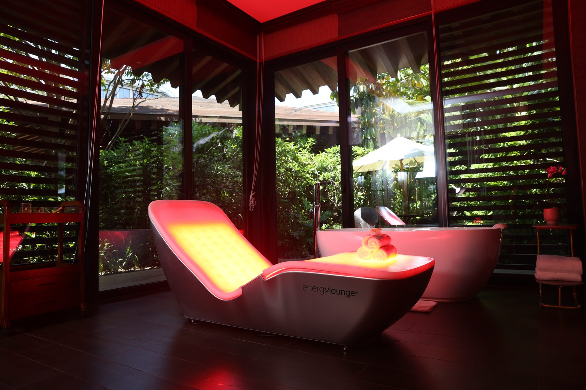
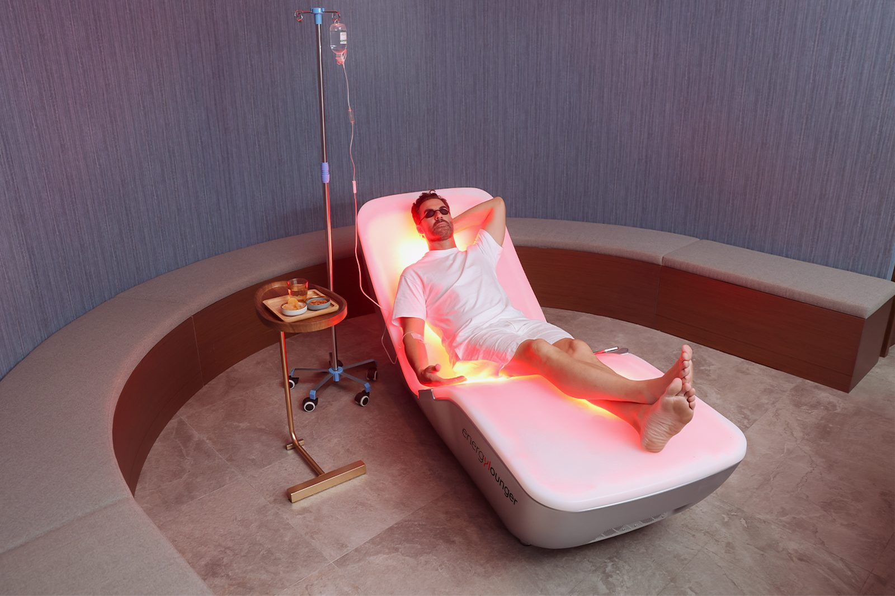
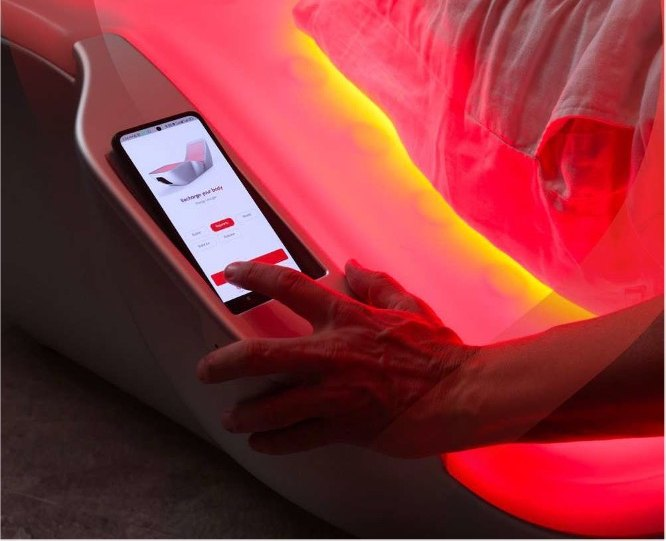
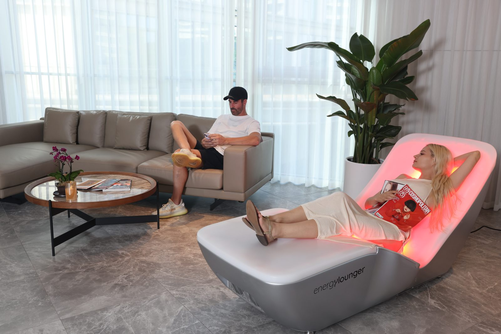
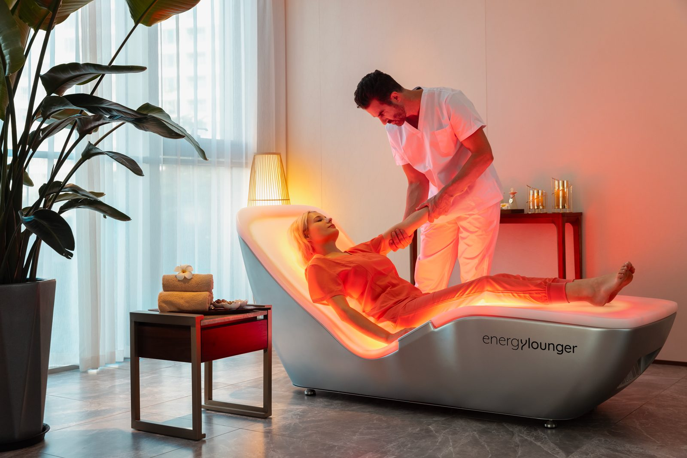
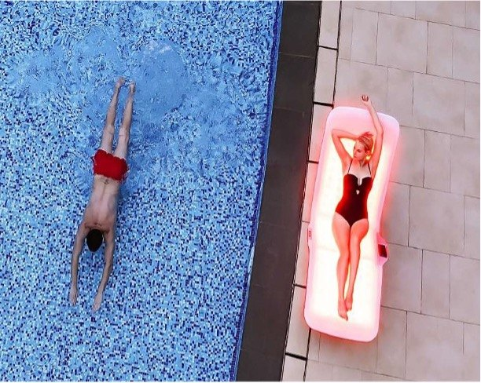
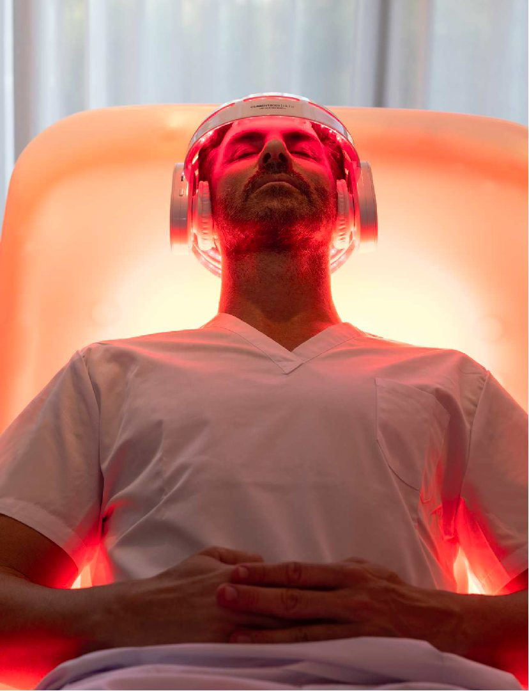
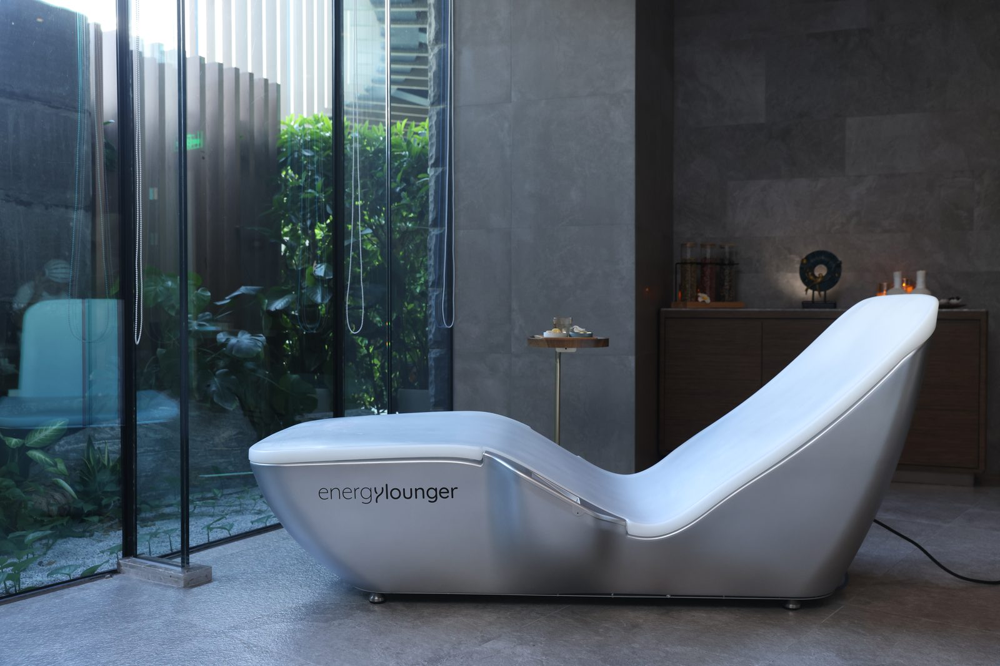
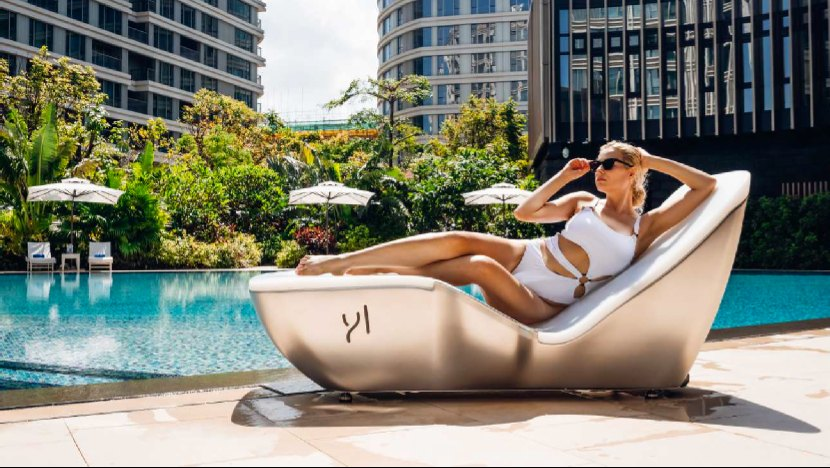
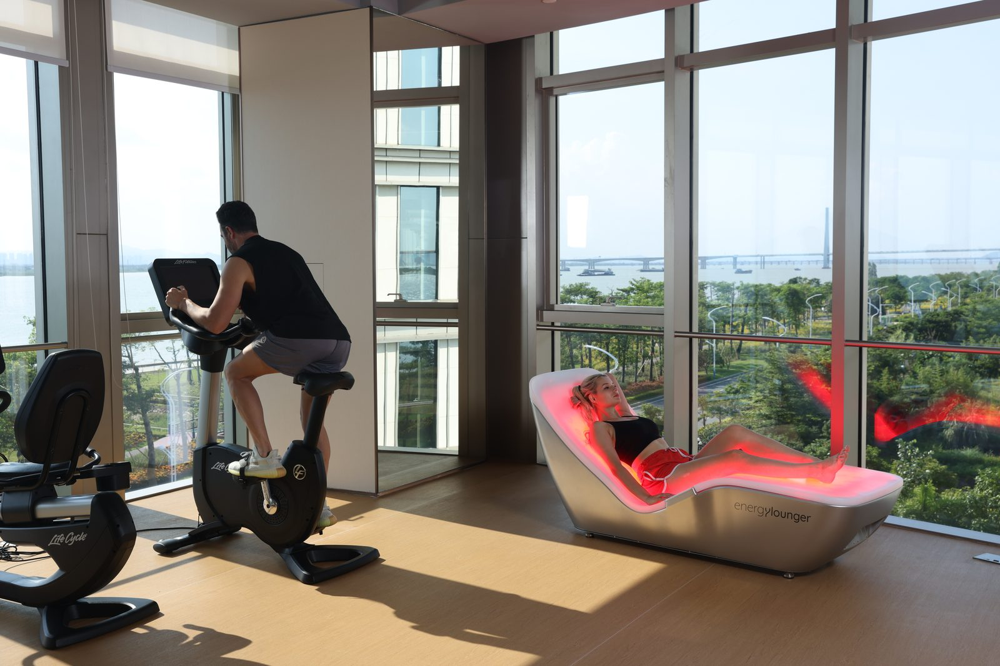
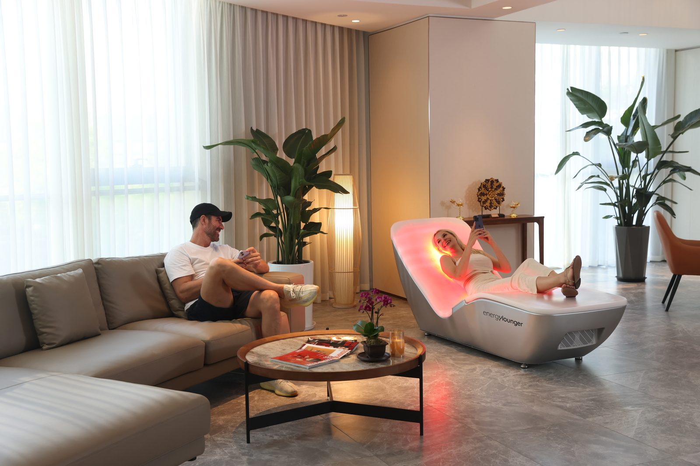
Look
closer
- Light source
- 1,260 triple-core LEDs, no UV
- Wavelengths
- 630 nm red, 850 & 940 nm near infrared
- Position
- Reclined, zero gravity
- Activation
- Lights up on body contact
- Programmes
- 5 presets, customisable in the app: Skin Rejuvenation, Muscle Recovery, Pain Management, Immunity Boost, Full Spectrum
- Session
- 20 min, automatic stop
- Protection
- IPX4 splash resistant
- Power
- 100–120 V / 200–240 V, 2,000 W
- Dimensions
- 189 × 85 × 86 cm, approx. 170 kg, on wheels
- Surface
- HDPE
- Cleaning
- One wipe with an antibacterial wipe between guests
- Included
- Goggles, noise-cancelling headphones, air pillow, neoprene dust cover
- Warranty
- 5 years frame, 2 years parts
- Safety
- Tested to IEC 60601-1
- Clearance
- FDA-cleared, Class II
- Certification
- CE certified
Picture
perfect
There are many longevity technologies, but very few as photogenic as this one. Red light makes you more beautiful, that much we can confirm. We just didn't expect it to work quite this fast: lie down, look into the camera, and there it is. Now picture it in your space. Which other piece of equipment markets itself this well?
And then guests come back, because 20 minutes of warmth is easy to fall in love with. The results are the reason they stay: EnergyLounger is even FDA-cleared to refine your silhouette. And over the weeks, something lovely happens: the glow stays, even when the light goes off.
- Irresistibly photogenic: your guests share it for you
- Fits recovery, sleep and energy programmes
- Low staff effort: lights up on contact, stops automatically
- A design object that lifts the room, not a clinical corner
Good to know
What is full-body red light therapy?
You lie back and the whole body is bathed in red and near-infrared light, the light of sunrise and sunset. EnergyLounger does it in a zero-gravity lounger with 1,260 LEDs at 630, 850 and 940 nm, entirely without UV.
Which programmes does EnergyLounger offer?
5 preset programmes of 20 minutes each: Skin Rejuvenation, Muscle Recovery, Pain Management, Immunity Boost and Full Spectrum. Each one can be adjusted in the app, for a personal routine at home or a signature treatment on your spa menu.
What is red light therapy used for?
Most often for muscle comfort and recovery after training, for skin and complexion, and to relax and sleep well. It works best as a regular weekly ritual rather than a one-off treatment.
What does a session feel like?
A soft red glow and a slow, even warmth across shoulders, legs and spine. Many guests drift off, and they get up warm, light and recharged.
How often should I use it?
Start with 2 or 3 sessions of 20 minutes a week, and build up to 5 a week, never more than 1 a day.
Is red light therapy safe?
EnergyLounger is free of UV, tested to IEC 60601-1, the international safety standard for medical electrical equipment, and FDA-cleared as a Class II device. Protective eyewear is worn for every session.
What should I wear?
Light sports clothing in a single layer is ideal: red light works on the skin, so the less you wear, the more it gives, and near-infrared warmth reaches you even through a light layer.
Who should not use it?
People under 18, during pregnancy, with epilepsy or heart disease. Anyone taking light-sensitising medication, or with an implant such as a pacemaker, should check with a doctor first.
Can I have one at home?
Yes. It's designed as furniture, on wheels and wipe-clean, with programmes chosen on the lounger or in the app.
Can I offer it in my spa, hotel or gym?
Yes: as a bookable session, a treatment add-on or a membership highlight. It lights up on contact and stops by itself, so staff time stays low.
Full operating and safety guidance is in the user manual.
In Europe, EnergyLounger is offered as a wellness device and makes no medical claims.
Always
support you
Before and after the sale, our team answers whatever you and your guests need to know.
Your team learns to use it, explain it and recommend it.
Models, pricing and integration, personally.
Bring light
into the room.
Models, pricing, and integration into your space: we'll take you through it personally.